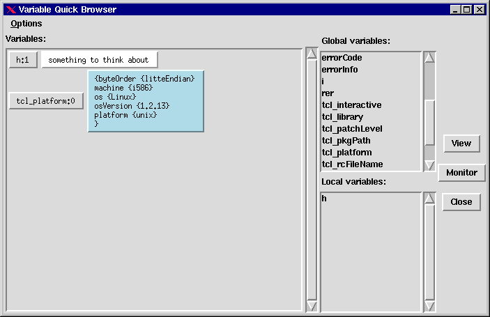

Using Tuba
version 2.4
Contents
What's New in 2.4
Starting Tuba
A Tour Of The GUI
Executing Your Source
Variables
Breakpoints
Source Code Navigation
Handling Errors From Your
Application
Proc Exclusions
Sessions
Customizing
What's New in 2.4
Version 2.4 includes many new changes, mostly bug fixes and a few added
features.
New Features
-
Proc Exclusions. This feature allows you to exclude certain procs
from being instrumented, thus you are not able to debug them. See the section
on Proc Exclusions.
-
Sessions. This feature allows you to save your debug sessions so
that you can debug the same program with the exact same setup. Saved items
include program, args, interpreter, working dir, options, and breakpoints.
See the section on Sessions.
-
Breakpoint retention on restart. Now when you restart a program,
you have the option of retaining your existing breakpoints. Set the appropriate
checkbuttons as desired. See the snapshot of the new
restart window to see the changes.
Bug Fixes
This just lists some of the more annoying bugs, but many minor ones were
also fixed.
-
These problems with instrument caching have been fixed:
-
Using a cached file resulted in an empty proc list and no valid breakpoint
locations.
-
Changing various options can change the output of the instrumentation,
but Tuba ignored these changes and retrieved a cached version of a file.
-
Tuba now employs a state model to know when various commands are allowed
or not. Before, hitting something like the step into button without a program
loaded generated an obscure error message. The current state is also displayed
in the lower right hand corner of the main window.
-
Status line redesigned. I added some fields and removed the source level
field. Also, some fields are now scrollable entry boxes. See the new
main window screenshot. Additions are:
-
the line number
-
the current session
-
the currently displayed file (can be different than the current debugger
position)
-
Confirmation when you try to kill a running program. This confirmation
happens on load program, restart, open session, and exit actions. If this
gets too annoying, I'll make it a configurable item.
Starting Tuba
Tuba Command Line
tuba ?options? program ?args?
When started this way, Tuba always runs the program in the current directory.
Restarting
If you want to restart the current program, you can select the Debugger/Restart
menu option.
If the program is already loaded and running, Tuba will ask you if you
want to kill it.
Restart allows you to enter a new set of command line arguments, as
well as the interpreter and a new run directory.
Loading a New Program
Once you are inside Tuba, you can load in a different Tcl/Tk program. Do
this by selecting the Debugger/Load new program menu option.
If a program is already loaded and running, Tuba will ask you if you
want to kill it.
The following dialog box will pop up to get the program to load, any
arguments to pass to the program when it is run, the interpreter to run
the program, and the directory to run it in.
If you don't know the exact program or its location, you can hit the
Browse button to bring up the standard Tcl open file dialog.
If there are no arguments, you can leave the arguments field blank.
Note that the interpreter must be based on Tcl/Tk version 8.0 in order
to get the namespace functionality. Click the Browse button to
search for it using the standard Tcl Open file dialog.
If you don't care about the run directory, leave it blank; it will default
to the directory of the program.
After hitting Ok, the new source file will be loaded and instrumented
and started, stopping on the first line of the file.
A Tour Of The GUI
The Tuba main window looks like this:
|
Menu bar
Tool bar
Status Line
Code window
Current Line
Message Line |
Menu Bar
The menu bar organizes all the possible debugger commands and actions.
Tool Bar
The tool bar provides some shortcuts to the most common debugging operations.
They are described below.
Toggles
a breakpoint at the current cursor position.
Continue
(run) the debugger to the next breakpoint or until the program ends.
Step
to next line, stepping into procedure calls and source commands.
Step
over to next line, stepping over procedure calls and source commands.
 Stops
execution of the program and gives control back to the debugger.
Stops
execution of the program and gives control back to the debugger.
View
variable; brings up a variable monitor dialog for the variable named by
the current mouse selection.
Make
the home position (current debugging position) visible in the code window.
Finish
the current procedure level; i.e. continue execution and stop when our
stack level is one less than currently.
Finish
the current source command; i.e. continue execution and stop when the source
level is one less than currently.
Finish
program. This removes all breakpoints and allows the program to run until
it exists without any debugger intervention.
Kills
any running program and exits the Tuba debugger.
Status Bar
The status bar gives information about the home position, which is the
current position in the program you're debugging.
-
File The current file
-
Proc The current proc
-
Level The current stack level; i.e. how deep in the call stack are
you
-
Source Level The current source level; i.e. how many nested source
commands are you in
Source Code
This shows the source code of the currently loaded file.
Current Line
The current line the debugger is stopped on is highlighted in blue.
Message Box
Informational messages from the debugger are displayed here.
Executing Your Source
Varying Degrees of Execution
While debugging your program, there are several varying degrees of execution.
The most used commands are continue, step into, and step over.
Continue
This continues your program's execution until a breakpoint is hit or
the program exits.
Step Into
This will execute the current line of code and stop on the next line.
Step Into, as the name implies, will step into a procedure call or source
command (in Tuba, a source command is treated as a procedure call without
a stack level change).
Step Over
This will also execute the current line of code, but it will not step
into a procedure call or source command. In other words, the next line
will be the line after the procedure call, not a line inside the procedure.
Levels
As your program runs, it goes through a number of levels.
Every time it makes a procedure call, it increments the stack level.
This level can be retrieved with the Tcl command info level.When
a procedure returns, the level is decremented.
The same kind of idea exists for source commands. When your program
runs the source command, Tuba increments the source level. Source
commands can be nested just like procedure calls.
These concepts are important for the next set of source execution commands:
Finish Proc
This continues the debugger until the program has returned from the
current procedure. An internal breakpoint is set that says "break when
my stack level is one less than my current level".
Finish Source
Similar to the finish proc command, this continues the debugger until
it is no longer inside the file that was sourced. The internal breakpoint
says "break when my source level is one less than my current source level".
Finishing Without the Debugger
When you want to continue running your program at full speed without the
debugger getting in the way, the finish command will do that. Control will
not come back to the debugger until the program exits. Even the stop button
will not work.
Variables
Tuba provides two methods to view the variables of a running program.
Variable Quick Browser
The quick browser is a means to view a group of variables at once, whose
values are for the most part short.
You bring up the variable quick browser window by selecting the View/Variables
or Variables/View menu options.

The listboxes on the right displays all the possible variables you can
view. The variables are separated out in global or local groups.
The textbox on the left contain all the currently viewed variables.
If you keep this window up and continue debugging, the variables in the
window will get updated when they change. Those variables whose value has
a blue background are arrays; those with white backgrounds are normal variables.
To add variables to the view textbox, select the variable (or variables,
since it is a multiselect listbox) you want and hit the Add button.
To remove variables from the view textbox, simply click on the variable
name, which is a button embedded in the textbox. This will remove the variable
and the value from the window.
If you hit the Monitor button with variable(s) selected, it will bring
up the variable monitor window for the selected variable(s). Another method
to bring up a variable monitor is to click on the value of a variable that
is in the view textbox. Variable monitors are described in the next section.
Quick Browser Options
The quick browser has a menu at the top for options. Here are the options
that can be set:
autoremove unset vars
When a variable is unset, the quick browser will show the variable
with a value of <unset>. If the autoremove option is set, then any unset
variables will automatically be removed from the variable from the window.
show interpreter core globals
When this option is set, Tcl core globals are displayed in the global
variables listbox.
save options
This command will save these options to the tuba init file.
Variable Monitors
Variable monitors give you more power with variables. A variable monitor
window looks like this:
There are several ways to bring up a variable monitor window. The first
you've already seen from the previous section. Select a variable in the
variable quick browser listbox and hit the Monitor button. You can also
hit the value button in the view textbox of the variable quick browser.
Another way to bring up a variable monitor window is from the main window.
Simply highlight the variable name in the code window that you want to
monitor. Then hit the magnifying glass icon to bring up the window.
A variable monitor window has the following components:
-
a label identifying what the variable name is
-
a scrollable textbox with the variable's value. The size of this box has
a max and min width and height.
-
a watchpoint checkbox. This will be covered below in the Breakpoints section.
(or jump to it now.)
-
a Modify button. You can change the value in the text box. If
you hit the Modify button, you will actually change the value
of the variable in the program being debugged.
Comparing the Quick Browser with the Monitor
The following table shows the differences between the two methods of variable
viewing. Hopefully from this you will get an idea when to use one over
the other.
| Feature |
Quick Browser |
Monitor |
| Can view several variables in one window |
Yes |
No |
| Can view all (untruncated) variable value |
No |
Yes |
| Can modify variable value |
No |
Yes |
| Can set watchpoint on variable |
No |
Yes |
Comparison of Browser to Monitor
Breakpoints
Breakpoints are events that tell the debugger that it needs to take control
of the running program. Tuba supports three types of breakpoints.
Line Breakpoints
A line breakpoint is set on a specific line in a file. Whenever the execution
of your program comes to this line, the breakpoint stops the execution
and gives the debugger control.
There are a couple of ways to set a line breakpoint. The easiest is
to click the right mouse button on the line or proc definition where you
want the breakpoint. Another click of the right mouse button will turn
it off.
Another way is to place the insertion cursor anywhere on the line you
want to set a breakpoint on. Then hit the Toggle breakpoint button
in the toolbar. This should turn the line red, which means there is a breakpoint
on that line.
If you want to set a breakpoint on a line in a file that has not been
loaded yet, you need to load the file.
To view your current set of breakpoints, select the menu option Breakpoints/View
line BPs. This will bring up a dialog window like this:
The listbox lists each active breakpoint, with the filename and line
number. If you leave this window up, it will automatically keep updated
as you create or remove breakpoints.
The Remove button will remove any breakpoints selected in the
listbox. The listbox is a multiple select listbox, so you can remove many
at once.
The Goto button will make the first selected breakpoint file
and line visible in the source code window.
Close will close the window.
Procedure Breakpoints
A procedure breakpoint consists of a procedure name. Whenever your executing
program enters a procedure that has a procedure breakpoint, execution will
transfer to the debugger.
One way to set a procedure breakpoint is the same as setting a line
breakpoint. Put the insertion cursor on the line where the proc statement
is and hit the Toggle BP button on the toolbar.
Sometimes you don't know where the proc is or you don't want to go hunting
for it, but you know the proc name. You can set a procedure breakpoint
by selecting the menu option View/Procedures.The window that comes
up contains a list of all the known procedures that can have a procedure
breakpoint.
The Toggle BP button will toggle the selected procedure(s)
breakpoint status. Those procedures that have breakpoints have (B)
at the end of the name.
The Goto button will display the procedure in the code window.
Variable Breakpoints
Sometimes called watchpoints, avariable breakpoint is one you set on a
specific variable. Whenever this variable is modified, a breakpoint is
triggered and control is transferred back to the debugger. Note that when
the debugger gets control back, the current line is the line after the
line that modified the variable.
To set a variable breakpoint, bring up a variable monitor window on
a variable as described in the previous section. Check the checkbutton
with the text "Break when variable set". This will set up a variable
breakpoint for this variable.
To turn it off, uncheck the checkbutton or close the variable monitor
window.
Source Code Navigation
Tuba supports the possibility that the program you're debugging actually
consists of multiple source files.
Once a file is sourced into yuor running program, the file is added
to the list of loaded files. You can always display one of these files
by bringing down the Goto menu button and selecting the file from
the list brought up by the Loaded source file menu option.
If a file has not been loaded yet, you can still view it by selecting
the File option in the View menu. Enter the file and
it will be displayed in the code window. Even though the file has not been
"officially" loaded by your program, you can still set breakpoints in the
file as usual.
When you start browsing different source files, you often lose track
of the current debugger position. When you want to quickly jump back to
this spot so that you may resume debugging, you can hit the home button
in the toolbar or select the Home debugger position menu option
in the Goto menu.
Handling Errors From
Your Application
Tuba attempts to catch errors thrown by your application. This gives the
user a chance to look at the stack or variables at the time of the error
to figure out what went wrong.
When the error is caught, you will see windows like this displayed:
In the source code window highlighted with a red background is the line
that caused the error (actually, the last Tuba-known line; code that was
not instrumented would not show up) and a dialog box tells you what the
error is and gives you three options:
-
Abort the application. Immediately aborts the running application.
-
Let the error continue. This will rethrow the error, and assumes that your
application has code somewhere to handle the error.
-
Ignore the error and continue. This will continue execution to the next
statement. Be careful with this! It can alter the logic of your code because
the failed statement did not complete.
Before selecting one of these options, you may go to the main Tuba window
and perform the following tasks:
-
View variables
-
View the stack
-
Change options
These tasks would be run relative to the stack level where Tuba caught
the error. The intent is to allow the user an opportunity to look more
closely for the cause of the error.
You may turn off Tuba's interception of errors by deselecting the option
"Intercept errors" in the Options menu.
Should your application terminate with an error, meaning your application
did not catch an error, then Tuba will also catch this. But only a dialog
informing the user what the error was will display. The user cannot inspect
the code because the stack has already unwound and the context of the error
is no longer available.
Proc Exclusions
You may find yourself debugging in an environment that contains many procs
that you don't really care to step into. Setting up proc exclusions is
a way for you to disable some procs from being instrumented, thus rendering
them undebuggable. This means you can't step into these procs, nor set
breakpoints inside them. They run at full speed as originally written.
Proc exclusions are simply a white space-delimited list of proc expressions.
If any of your procs match one of the expressions (matching being done
via string match), then that proc is excluded from the instrumentation.
Here is an example of a proc exclusion list:
debug
::tk*
::myns::X*
Proc exclusions can be entered two ways:
1. via the -e <excl_file> command line option. The
excl_file is a file containing the list of proc exclusion expressions.
2. via the Proc Exclusions... menu item in the Options
menu. This will bring up a dialog box shown below:
To enter a new exclusion, select <NEW> in the list box and hit the
Edit button (or double click on the listbox entry). This will put the <NEW>
entry in the entry field below the listbox for you to edit:

You see the save button has now become active. Enter in your new exclusion
expression and hit the Save button (or hit the enter key). This will add
it to the listbox.
To edit an existing expression, just double click it or select it and
hit Edit. Edit the expression in the entry box and save it just like you
did when creating a new entry. When you save, it will replace the entry
in the listbox.
Removing expressions is just as easy: just select the entry in the listbox
and hit Remove.
No changes actually take place until you hit the Ok button. You can
cancel all your edits via the cancel button.
Note: Although proc exclusions are in the Options menu, they
do not get saved in your .tubarc file. This is because proc exclusions
are not expected to be used for all debugging sessions, but rather for
very specific programs. The exclusions are, however, saved in the session
files, as described below.
Sessions
Sometimes you may find yourself debugging the same program over and over,
and setting the same breakpoints. This was a pain before, but now you can
save your current debugging session environment into a session file. A
session file can later be opened and your environment will be restored.
Here is a list of items stored in a session file:
-
the interpreter
-
the program you're debugging
-
the arguments of the program
-
the working directory
-
proc exclusions
-
line break points
-
proc break points
-
all debugger options in the Options menu
The session functions are accessed from the Debugger menu. Here
you can open existing sessions or create new ones. If you are currently
working on a session, the status line in the main window will indicate
the session file name.
You can save your debugger session at any time. Tuba will simply make
a snapshot of your current environment. Sessions are stored in session
files, which by default live in the directory $HOME/tuba. You
can change this default directory by bringing up the Locations dialog
from the Options menu. Of course, you can save your session files
anywhere; you are given the standard Tk open and save dialog boxes for
opening and saving session files.
Session files also contain information to handle stale breakpoints These
are created when someone changes the source files and now the saved line
breakpoints may be out of sync.
Timestamps of all the source files that have line breakpoints in them
are stored in the session files. When you open a session, Tuba will compare
all those timestamps with the files currently on your system. If any files
have a different timestamp, you will get a window similar to this:
The listbox will list all the files that have different timestamps.
There are three things you can do, and you can do more than one if you
wish:
-
Edit the breakpoints. Hitting the Edit BPs button will bring up the line
breakpoint window. In here, you can select the Goto action on selected
breakpoints to see if they are in a place you originally intended. You
can remove breakpoints and even create new ones in the main window.
When you are satisfied with the breakpoint settings, you can close the
breakpoint window and hit Continue on the Stale Breakpoints window.
-
Remove all BPs from selected files. You can select files in the listbox
(multiple selections allowed) and select the middle pushbutton. This will
remove all breakpoints in the selected files. When you are done, hit Continue.
-
Continue. This will leave the breakpoints as they are.
Once your session is loaded, you can continue debugging as before.
Customizing Tuba
Some features of Tuba are customizable, all which can be done via the Options
menu.
-
Balloon help. Turns balloon help on or off. When on, if you let
the mouse cursor linger on a toolbar button for a short time, a small window
pops up to tell you what the button is. This window automatically goes
away when the mouse button is taken off the button.
-
Status line. Turns on or off the status line display
-
Toolbar. Turns on or off the toolbar display
-
Animate run. When set, Tuba will display every line as it is executed
during a continue command. Otherwise, the home position will only be displayed
when the debugger is stopped and waiting for user interaction.
-
Debug system sources. When set, Tcl core sources, such as parray,
will be instrumented and debugged should you try to step into that code.
Otherwise, Tuba does not instrument any sources found in the tcl_library
directory.
-
Proc Exclusions. Proc exclusions are expressions, that when match
a proc name, excludes that proc from being instrumented. What this means
is that the proc cannot be stepped into or breakpoints set on. This is
handy for turning off certain procs that you don't want to debug during
a debug session.
-
Intercept errors. When set, Tuba will catch runtime errors as soon
as possible and give the user a chance to inspect the stack and variables.
Once an error is caught, the user can either abort the application, let
the error continue up the call stack, or ignore the error and continue
to the next statement.
-
Stack display. This sets the default stack type when viewing the
stack window. There are two types:
-
Level stack. This is the information retrieved from the info
level command. It is useful in seeing the arguments passed to each
procedure.
-
Tuba stack. This is the stack that Tuba maintains as your program
runs. It displays the procedure called and what file and line it was called
from.
-
Dynamic procs. When Tuba encounters a dynamically defined proc,
there are a number of actions to take. The action to take is defined by
these options:
-
Instrument at load time. This means go ahead and instrument the
proc as it is in the source.
-
Instrument at run time. This means don't instrument the proc until
it is actually defined at run time. By this time, the dynamic portions
will have been defined.
-
Ask. This will cause Tuba to ask the user which action to take for
every dynamic proc.
-
Instrumenting. You can set various instrumentation options here:
-
Loadtime instrumenting. This will instrument the entire source file
when the file is loaded (via source command).
-
Runtime instrumenting. This will instrument only the top level of
statements at loadtime and will instrument the inner blocks (of procs,
while loops, etc) as the source is run. This is slower, but it provides
much more accurate and correct instrumentation on source code that cannot
be instrumented fully at loadtime due to the dynamic nature of Tcl.
-
Cache instrumented file. When this is set, instrumented source files
are saved in a cache. Thus, when files are sourced and there is an up to
date instrumented file in the cache, it is loaded. This speeds up Tuba
considerably.
-
Parser. You can choose which parser implementation to use. Changing
this option will not have any immediate effect; you will have to restart
or load a new program.
-
Tcl-based. This is the parser written in Tcl; slower but compatible
across all Tcl platforms.
-
C-based. This is a faster parser written in C++.
-
Save options. This menu option will save your current settings to
the file ~/.tubarc, or in Windows, $HOME/tuba.ini. This file is read in
every time you start up Tuba.